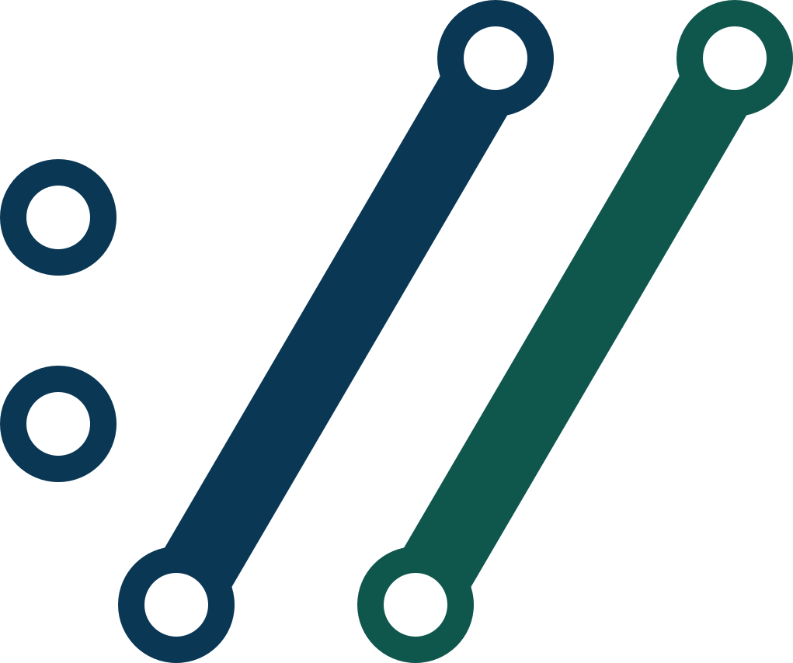
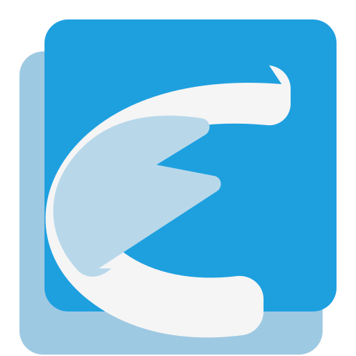
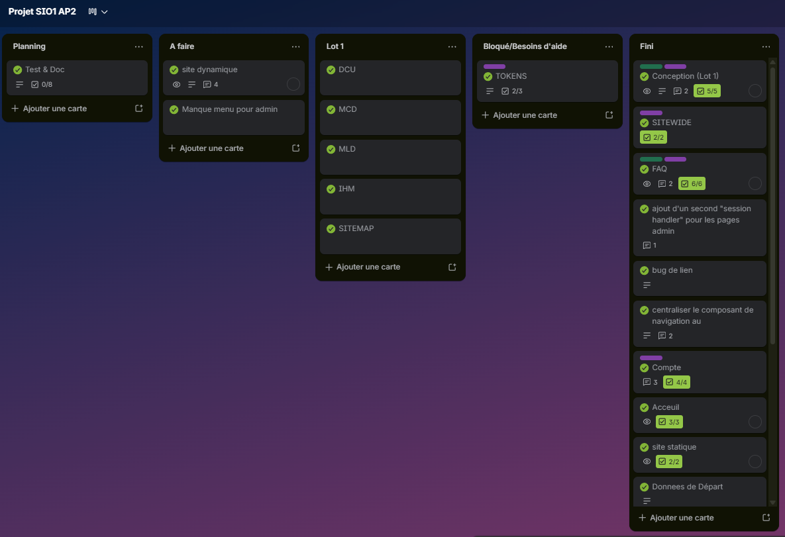
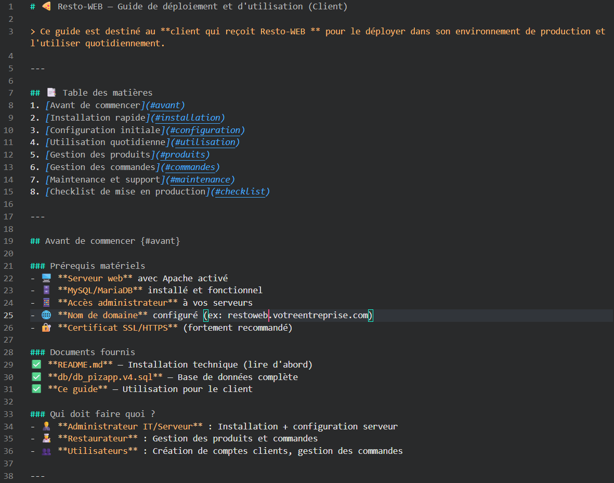

<!DOCTYPE html>
<html lang="fr">
  <head>
    <meta charset="UTF-8">
    <meta name="viewport" content="width=device-width, initial-scale=1.0">
    <link rel="stylesheet" href="css/background.css?v=20260416c">
    <title>The port-folio of Raphaël</title>
  </head>
  <body>
    <main>
      <section id="card-view" class="card-view" aria-live="polite"></section>
      
      <!-- Modale pour agrandir l'image -->
      <div id="image-lightbox" style="display: none; position: fixed; z-index: 99999; top: 0; left: 0; width: 100vw; height: 100vh; background-color: rgba(0, 0, 0, 0.8); justify-content: center; align-items: center; cursor: pointer; backdrop-filter: blur(5px);" onclick="this.style.display='none'; document.getElementById('lightbox-img').style.display='block'; if(document.getElementById('lightbox-pdf')) document.getElementById('lightbox-pdf').style.display='none'; document.getElementById('card-navbar').style.display='';">
        
        <iframe id="lightbox-pdf" src="" style="display: none; width: 90vw; height: 90vh; border-radius: 8px; box-shadow: 0 4px 20px rgba(0,0,0,0.6); border: none;"></iframe>
      </div>
    </main>
    <nav id="card-navbar" class="card-navbar" aria-label="Navigation des pages"></nav>

    <script>
      const pages = [
        {
          id: "accueil",
          label: "Accueil",
          href: "#accueil",
          rank: "A",
          suit: "\u2665",
          accent: "#63f2d6",
          title: "Bienvenue sur mon portfolio",
          description: "Découvre mon profil, mes compétences et ma progression en BTS SIO SLAM.",
          bullets: [
            "Développement web: HTML, CSS, JavaScript, PHP",
            "Approche projet: applications web et solutions dynamiques",
            "Curiosité technique: outils, virtualisation et conception"
          ],
          customHtml: `
            <article class="card-view-box accueil-view">
              <section class="accueil-hero" aria-label="Introduction">
                <h1 class="card-view-title">Bienvenue sur mon portfolio</h1>
                <h2>Étudiant en BTS SIO - option SLAM</h2>
                <h3> TONON Raphaël </h3>
              </section>
              <section class="accueil-profil" aria-label="Profil personnel">
                <h3 class="partie-title">Mon profil</h3>
                <p class="partie-text">
                  Je suis étudiant en BTS SIO SLAM, passionné par le développement web et la création d'applications utiles.
                  J'aime apprendre en pratiquant, transformer une idée en solution concrète et progresser en continu.
                </p>
                <div class="accueil-profil-cards" aria-label="Résumé de mon profil">
                  <section class="accueil-profil-card">
                    <h4>2</h4>
                    <p>Projets en cours de réalisation</p>
                  </section>
                  <section class="accueil-profil-card">
                    <h4>4</h4>
                    <p>Projets réalisés</p>
                  </section>
                  <section class="accueil-profil-card">
                    <h4>10+</h4>
                    <p>Technologies maîtrisées</p>
                  </section>
                </div>
              </section>
              <div class="partie-board accueil-board" aria-label="Contenu de la page d'accueil">
                <section class="partie-card accueil-intro-card">
                  <h3 class="partie-title">Parcours Scolaire</h3>
                  <div class="accueil-presentation-timeline" aria-label="Parcours de formation">
                    <article class="accueil-step">
                      <p class="accueil-step-date">sept 2024 - Aujourd'hui</p>
                      <span class="accueil-step-dot" aria-hidden="true"></span>
                      <section class="accueil-step-card">
                        <h4>BTS SIO - Option SLAM</h4>
                        <p>BTS Services Informatiques aux Organisations, option Solutions Logicielles et Applications Métiers.</p>
                        <p>Institut Limayrac, Toulouse.</p>
                      </section>
                    </article>
                    <article class="accueil-step">
                      <p class="accueil-step-date">sept 2023 - juin 2024</p>
                      <span class="accueil-step-dot" aria-hidden="true"></span>
                      <section class="accueil-step-card">
                        <h4>BAC STI2D - Option SIN</h4>
                        <p>Baccalauréat Sciences et Technologies de l'Industrie et du Développement Durable, spécialité Systèmes d'Information et Numérique.</p>
                        <p>Lycée Charles de Gaulle, Muret.</p>
                      </section>
                    </article>
                    <article class="accueil-step">
                      <p class="accueil-step-date">sept 2019 - juin 2023</p>
                      <span class="accueil-step-dot" aria-hidden="true"></span>
                      <section class="accueil-step-card">
                        <h4>Collège</h4>
                        <p>Brevet des collèges.</p>
                        <p>Collège François Verdier, Léguevin.</p>
                      </section>
                    </article>
                  </div>
                </section>
                <section class="partie-card accueil-competences-card">
                  <h3 class="partie-title">Parcours Professionnel</h3>
                  <div class="accueil-tech-timeline" aria-label="Compétences techniques détaillées">
                    <article class="accueil-tech-step">
                      <p class="accueil-tech-date">janv 2026 - févr 2026</p>
                      <span class="accueil-tech-dot" aria-hidden="true"></span>
                      <section class="accueil-tech-card">
                        <h4>Stage 2ème année BTS SIO SLAM</h4>
                        <p>Stage chez iRessources : conception et programmation d’une machine à dessin avec Arduino en C++, ainsi que développement et amélioration d’un bot Telegram en Node.js.</p>
                      </section>
                    </article>
                    <article class="accueil-tech-step">
                      <p class="accueil-tech-date">mai 2025 - juillet 2025</p>
                      <span class="accueil-tech-dot" aria-hidden="true"></span>
                      <section class="accueil-tech-card">
                        <h4>Stage 1ère année BTS SIO SLAM</h4>
                        <p>Développement d’une page web permettant de récupérer et stocker des données issues de mails dans une base SQL, puis création d’un graphique interactif avec filtres et API météo, tout en améliorant l’interface utilisateur (HTML, CSS, JavaScript, PHP).</p>
                      </section>
                    </article>
                  </div>
                </section>
              </div>
            </article>
          `
        },
        {
          id: "competences",
          label: "Compétences",
          href: "#competences",
          rank: "C",
          suit: "\u2666",
          accent: "#56c0ff",
          title: "Tableau de compétences",
          description: "Synthèse de mes compétences BTS SIO SLAM et suivi de progression.",
          bullets: [
            "Structurer un projet et documenter les réalisations",
            "Concevoir des interfaces et des logiques applicatives",
            "Maintenir une base de code claire et évolutive",
            "Tableau de suivi des compétences BTS SIO."
          ],
          customHtml: `
            <article class="card-view-box competences-view">
              <section class="competences-tech" aria-label="Technologies maîtrisées">
                <h1>Compétences</h1>
                <h2 class="competences-tech-title" >&lt;/&gt; Développement Web & App</h2>
                <div class="competences-tech-grid">
                  <div class="tech-card">
                    
                    <span class="tech-name">HTML5</span>
                  </div>
                  <div class="tech-card">
                    
                    <span class="tech-name">CSS3</span>
                  </div>
                  <div class="tech-card">
                    
                    <span class="tech-name">JavaScript</span>
                  </div>
                  <div class="tech-card">
                    
                    <span class="tech-name">PHP</span>
                  </div>
                  <div class="tech-card">
                    
                    <span class="tech-name">Java</span>
                  </div>
                  <div class="tech-card">
                    
                    <span class="tech-name">Python</span>
                  </div>
                  <div class="tech-card">
                    
                    <span class="tech-name">C++</span>
                  </div>
                  <div class="tech-card">
                    
                    <span class="tech-name">SQL</span>
                  </div>
                  <div class="tech-card">
                    
                    <span class="tech-name">Node.js</span>
                  </div>
                </div>
              </section>

              <div class="partie-board" aria-label="Résumé des compétences">
                <section class="partie-card frameworks-card">
                  <h3 class="partie-title frameworks-title">Frameworks & Bibliothèques</h3>
                  <div class="competences-tech-grid frameworks-grid">
                    <div class="tech-card">
                      
                      <span class="tech-name">Chart.js</span>
                    </div>
                    <div class="tech-card">
                      
                      <span class="tech-name">IMAP</span>
                    </div>
                    <div class="tech-card">
                      
                      <span class="tech-name">cURL</span>
                    </div>
                    <div class="tech-card">
                      
                      <span class="tech-name">Arduino.h</span>
                    </div>
                  </div>
                </section>
                <section class="partie-card tools-card">
                  <h3 class="partie-title frameworks-title"><span class="frameworks-title-icon" aria-hidden="true">🛠</span> Outils & Environnement</h3>
                  <div class="competences-tech-grid tools-grid">
                    <div class="tech-card">
                      <span class="tech-icon-pair" aria-hidden="true">
                         / 
                        
                      </span>
                      <span class="tech-name">Git & GitHub</span>
                    </div>
                    <div class="tech-card">
                      
                      <span class="tech-name">VS Code</span>
                    </div>
                    <div class="tech-card">
                      
                      <span class="tech-name">Wireshark</span>
                    </div>
                    <div class="tech-card">
                      
                      <span class="tech-name">Looping</span>
                    </div>
                    <div class="tech-card">
                      
                      <span class="tech-name">VirtualBox</span>
                    </div>
                    <div class="tech-card">
                      
                      <span class="tech-name">GLPI</span>
                    </div>
                    <div class="tech-card">
                      
                      <span class="tech-name">Arduino</span>
                    </div>
                    <div class="tech-card">
                      
                      <span class="tech-name">Scratch2</span>
                    </div>
                  </div>
                </section>
              </div>

              <section class="partie-card" aria-label="Tableau de suivi des compétences">
                <h3 class="partie-title">Tableau de Compétences</h3>
                <p class="partie-text">Vous trouverez ci-dessous un tableau détaillant mes compétences acquises en BTS SIO.</p>
                <iframe
                  src="docs/E5 2026 - Tableau des compétences.pdf"
                  width="100%"
                  height="500px"
                ></iframe>
              </section>
            </article>
          `
        },
        {
          id: "mes-projets",
          label: "Mes Projets",
          href: "#mes-projets",
          rank: "P",
          suit: "★",
          accent: "#ffd166",
          title: "Mes Projets",
          description: "La galerie de mes différents projets réalisés.",
          bullets: [],
          customHtml: `
            <article class="card-view-box">
              <section aria-label="Galerie des projets">
                <div style="display: grid; grid-template-columns: repeat(auto-fill, minmax(280px, 1fr)); gap: 20px;">
                  
                  <div class="partie-card" style="display: flex; flex-direction: column; cursor: pointer; padding: 0; overflow: hidden;" onclick="window.open('docs/Projets M2L/Index.html', '_blank')">
                    
                    <div style="padding: 16px; display: flex; flex-direction: column; gap: 12px; flex: 1;">
                      <h3 class="partie-title" style="color: #ffd166; margin: 0;">Maison des Ligues (M2L)</h3>
                      <p class="partie-text" style="font-size: 0.9rem; margin: 0;">Site vitrine de la Maison des Ligues de Lorraine. Présentation des ligues et actualités.</p>
                      <div style="display: flex; flex-wrap: wrap; gap: 8px; margin-top: auto; padding-top: 10px;">
                        <span style="font-size: 0.75rem; padding: 4px 10px; background: rgba(255, 209, 102, 0.15); border: 1px solid rgba(255, 209, 102, 0.3); border-radius: 6px; color: #ffd166;">HTML/CSS</span>
                        <span style="font-size: 0.75rem; padding: 4px 10px; background: rgba(255, 209, 102, 0.15); border: 1px solid rgba(255, 209, 102, 0.3); border-radius: 6px; color: #ffd166;">Javascript</span>
                      </div>
                    </div>
                  </div>

                  <div class="partie-card" style="display: flex; flex-direction: column; cursor: pointer; padding: 0; overflow: hidden;" onclick="window.open('docs/Projets AppFAQ/index.html', '_blank')">
                    
                    <div style="padding: 16px; display: flex; flex-direction: column; gap: 12px; flex: 1;">
                      <h3 class="partie-title" style="color: #ffd166; margin: 0;">Réponso'Ligue (AppFAQ)</h3>
                      <p class="partie-text" style="font-size: 0.9rem; margin: 0;">Application de foire aux questions pour la Maison des Ligues de Lorraine.</p>
                      <div style="display: flex; flex-wrap: wrap; gap: 8px; margin-top: auto; padding-top: 10px;">
                        <span style="font-size: 0.75rem; padding: 4px 10px; background: rgba(255, 209, 102, 0.15); border: 1px solid rgba(255, 209, 102, 0.3); border-radius: 6px; color: #ffd166;">HTML/CSS</span>
                        <span style="font-size: 0.75rem; padding: 4px 10px; background: rgba(255, 209, 102, 0.15); border: 1px solid rgba(255, 209, 102, 0.3); border-radius: 6px; color: #ffd166;">PHP</span>
                        <span style="font-size: 0.75rem; padding: 4px 10px; background: rgba(255, 209, 102, 0.15); border: 1px solid rgba(255, 209, 102, 0.3); border-radius: 6px; color: #ffd166;">SQL</span>
                      </div>
                    </div>
                  </div>

                  <div class="partie-card" style="display: flex; flex-direction: column; cursor: pointer; padding: 0; overflow: hidden;" onclick="window.open('docs/Projets%20Pizapp%20partie%201/index.html', '_blank')">
                    <div style="position: relative; width: 100%; height: 140px; overflow: hidden; background: #111;">
                      <div style="position: absolute; inset: 0; background: linear-gradient(180deg, rgba(0,0,0,0.18), rgba(0,0,0,0.48)); pointer-events: none;"></div>
                      <iframe src="docs/Projets%20Pizapp%20partie%201/index.html" style="position: absolute; top: 0; left: 0; width: 300%; height: 300%; transform: scale(0.3333); transform-origin: top left; border: none; pointer-events: none;" aria-hidden="true"></iframe>
                    </div>
                    <div style="padding: 16px; display: flex; flex-direction: column; gap: 12px; flex: 1;">
                      <h3 class="partie-title" style="color: #ffd166; margin: 0;">Site PizApp</h3>
                      <p class="partie-text" style="font-size: 0.9rem; margin: 0;">Clique pour ouvrir la version statique exportée du dossier PizApp.</p>
                      <div style="display: flex; flex-wrap: wrap; gap: 8px; margin-top: auto; padding-top: 10px;">
                        <span style="font-size: 0.75rem; padding: 4px 10px; background: rgba(255, 209, 102, 0.15); border: 1px solid rgba(255, 209, 102, 0.3); border-radius: 6px; color: #ffd166;">HTML/CSS</span>
                        <span style="font-size: 0.75rem; padding: 4px 10px; background: rgba(255, 209, 102, 0.15); border: 1px solid rgba(255, 209, 102, 0.3); border-radius: 6px; color: #ffd166;">PHP</span>
                        <span style="font-size: 0.75rem; padding: 4px 10px; background: rgba(255, 209, 102, 0.15); border: 1px solid rgba(255, 209, 102, 0.3); border-radius: 6px; color: #ffd166;">SQL</span>
                      </div>
                    </div>
                  </div>

                  <div class="partie-card" style="display: flex; flex-direction: column; cursor: pointer; padding: 0; overflow: hidden;" onclick="window.open('docs/Projets%20Pizapp%20partie%202/index.html', '_blank')">
                    <div style="position: relative; width: 100%; height: 140px; overflow: hidden; background: #111;">
                      <div style="position: absolute; inset: 0; background: linear-gradient(180deg, rgba(0,0,0,0.18), rgba(0,0,0,0.48)); pointer-events: none;"></div>
                      <iframe src="docs/Projets%20Pizapp%20partie%202/index.html" style="position: absolute; top: 0; left: 0; width: 300%; height: 300%; transform: scale(0.3333); transform-origin: top left; border: none; pointer-events: none;" aria-hidden="true"></iframe>
                    </div>
                    <div style="padding: 16px; display: flex; flex-direction: column; gap: 12px; flex: 1;">
                      <h3 class="partie-title" style="color: #ffd166; margin: 0;">Applications Java Pizapp</h3>
                      <p class="partie-text" style="font-size: 0.9rem; margin: 0;">Version statique du client Java de PizApp, avec interface de commande et gestion des statuts.</p>
                      <div style="display: flex; flex-wrap: wrap; gap: 8px; margin-top: auto; padding-top: 10px;">
                        <span style="font-size: 0.75rem; padding: 4px 10px; background: rgba(255, 209, 102, 0.15); border: 1px solid rgba(255, 209, 102, 0.3); border-radius: 6px; color: #ffd166;">Java</span>
                      </div>
                    </div>
                  </div>

                  <div class="partie-card" style="display: flex; flex-direction: column; cursor: pointer; padding: 0; overflow: hidden;" onclick="window.open('docs/Projets%20Stage%201/index.html', '_blank')">
                    <div style="position: relative; width: 100%; height: 140px; overflow: hidden; background: #0f1720;">
                      <iframe src="docs/Projets%20Stage%201/index.html" style="position: absolute; top: 0; left: 0; width: 320%; height: 420px; transform: scale(0.34); transform-origin: top left; border: none; pointer-events: none;" aria-hidden="true"></iframe>
                      <div style="position: absolute; inset: 0; background: linear-gradient(180deg, rgba(0,0,0,0), rgba(0,0,0,0.28));"></div>
                    </div>
                    <div style="padding: 16px; display: flex; flex-direction: column; gap: 12px; flex: 1;">
                      <h3 class="partie-title" style="color: #ffd166; margin: 0;">Projet Stage 1</h3>
                      <p class="partie-text" style="font-size: 0.9rem; margin: 0;">Export statique du site Captusite. Présentation de l’espace projet et du suivi de production.</p>
                      <div style="display: flex; flex-wrap: wrap; gap: 8px; margin-top: auto; padding-top: 10px;">
                        <span style="font-size: 0.75rem; padding: 4px 10px; background: rgba(255, 209, 102, 0.15); border: 1px solid rgba(255, 209, 102, 0.3); border-radius: 6px; color: #ffd166;">HTML/CSS</span>
                        <span style="font-size: 0.75rem; padding: 4px 10px; background: rgba(255, 209, 102, 0.15); border: 1px solid rgba(255, 209, 102, 0.3); border-radius: 6px; color: #ffd166;">JS</span>
                        <span style="font-size: 0.75rem; padding: 4px 10px; background: rgba(255, 209, 102, 0.15); border: 1px solid rgba(255, 209, 102, 0.3); border-radius: 6px; color: #ffd166;">Static</span>
                      </div>
                    </div>
                  </div>

                </div>
              </section>
            </article>
          `
        },
        {
          id: "patrimoine-informatique",
          label: "Gestion du patrimoine informatique",
          href: "#patrimoine-informatique",
          rank: "G",
          suit: "\u2663",
          accent: "#7cd9ff",
          title: "Gestion du patrimoine informatique",
          description: "La gestion du patrimoine informatique consiste à recenser, suivre, maintenir et faire évoluer l’ensemble des ressources informatiques d’une organisation afin de garantir leur bon fonctionnement et leur adéquation avec les besoins des utilisateurs.",
          bullets: [
            "J'ai appris à mettre cela en place avec l'aide d'un TP GLPI vu en classe.",
            "Mise en pratique de l'inventaire, du suivi et de la maintenance des ressources informatiques."
          ],
          customHtml: `
            <article class="card-view-box competences-view patrimoine-view">
              <section class="competences-tech" aria-label="Patrimoine informatique">
                <h1>Patrimoine informatique</h1>
                <h2 class="competences-tech-title">Définition</h2>
                <p class="partie-text">Le patrimoine informatique désigne l'ensemble des ressources liées au système d'information d'une organisation. Il comprend les équipements matériels, les logiciels, les bases de données et les contenus numériques.</p>
              </section>
              <div class="partie-board" aria-label="Synthèse du patrimoine informatique">
                <section class="partie-card frameworks-card" style="padding: 0; overflow: hidden; display: flex; cursor: pointer;" onclick="document.getElementById('image-lightbox').style.display='flex'; document.getElementById('lightbox-img').src=this.querySelector('img').src; document.getElementById('card-navbar').style.display='none';">
                  
                </section>
                <section class="partie-card tools-card">
                  <h3 class="partie-title frameworks-title"><span class="frameworks-title-icon" aria-hidden="true">&#128202;</span> Tableau de bord personnel</h3>
                  <p class="partie-text"> - Cette interface principale de GLPI offre une vue d'ensemble immédiate sur le support et l'activité du service informatique. On y repère directement la section des tickets ("Vos tickets", "Nouveaux billets") pour gérer l'assistance aux utilisateurs.<br> - Cet espace comprend également un suivi graphique des "Événements (6 derniers mois)". Il permet à l'administrateur de centraliser les opérations du quotidien, de la gestion des incidents jusqu'à la maintenance du parc.</p>
                </section>
              </div>

              <section class="partie-card" aria-label="Mise en pratique en formation">
                <h3 class="partie-title">Mise en pratique</h3>
                <p class="partie-text">
                  - Lors des travaux pratiques, j’ai mis en place et exploité l’outil GLPI pour simuler la gestion d'un parc de bout en bout. <br><br>
                  - Les différentes machines virtuelles (VM) remontaient leurs informations vers le serveur, ce qui m'a permis de concrétiser l'automatisation de l'inventaire (à la fois matériel et logiciel, comme détaillé ci-dessous).
                </p>
              </section>
              <div class="partie-board" aria-label="Synthèse du patrimoine informatique">
                <section class="partie-card frameworks-card">
                 <h3 class="partie-title frameworks-title"><span class="frameworks-title-icon" aria-hidden="true">💻</span> Inventaire des Logiciels</h3>
                  <p class="partie-text">L'outil assure un recensement détaillé des ressources logicielles au travers de listes exhaustives :</p>
                  <ul class="card-view-list">
                    <li><strong>Recensement automatisé :</strong> Affichage de tous les logiciels installés sur les différents postes (systèmes d'exploitation, utilitaires, outils réseaux...).</li>
                    <li><strong>Suivi des versions :</strong> Visualisation des versions exactes pour chaque application afin de gérer la conformité et de planifier les mises à jour de sécurité.</li>
                    <li><strong>Déploiement quantifié :</strong> Indication du nombre d'installations existantes par logiciel sur l'ensemble du parc.</li>
                    <li><strong>Pérennité du SI :</strong> Identification des applications et des éditeurs pour une meilleure gestion des licences et de la maintenance.</li>
                  </ul>

                </section>
                <section class="partie-card tools-card" style="padding: 0; overflow: hidden; display: flex; cursor: pointer;" onclick="document.getElementById('image-lightbox').style.display='flex'; document.getElementById('lightbox-img').src=this.querySelector('img').src; document.getElementById('card-navbar').style.display='none';">
                  
                </section>
              </div>
            </article>
          `
        },
        {
          id: "support-utilisateur",
          label: "Répondre aux incidents et aux demandes d’assistance et d’évolution",
          href: "#support-utilisateur",
          rank: "R",
          suit: "\u2663",
          accent: "#ff8f9f",
          title: "Répondre aux incidents et aux demandes d’assistance et d’évolution",
          description: "Traiter les incidents et les demandes d’assistance ou d’évolution, c’est garantir la continuité et l’efficacité du système informatique : en résolvant rapidement les problèmes des utilisateurs et en intégrant leurs besoins d’amélioration, on optimise leur expérience et la performance globale du SI.",
          bullets: [
            "Pendant mon stage chez Captusite, j'ai eu une demande d'évolution constante sur la page web que j'ai codée."
          ],
          customHtml: `
            <article class="card-view-box competences-view support-view">
              <section class="competences-tech" aria-label="Support Utilisateur">
                <h1>Répondre aux incidents et aux demandes d’assistance et d’évolution</h1>
                <h2 class="competences-tech-title">Définition</h2>
                <p class="partie-text">
                  Répondre aux incidents et aux demandes d’assistance et d’évolution consiste à prendre en charge les problèmes rencontrés par les utilisateurs ainsi que leurs demandes d’amélioration du système informatique, afin de rétablir le bon fonctionnement des services ou de les faire évoluer.
                </p>
              </section>

              <div class="partie-board" aria-label="Contenu Support">
                <section class="partie-card frameworks-card">
                  <h3 class="partie-title frameworks-title"><span aria-hidden="true">&#128187;</span> Mon cas pratique (Projet PizApp)</h3>
                  <p class="partie-text" style="font-style: italic; margin-bottom: 12px; color: var(--page-accent);">
                    « Gestion des évolutions et bugs via un tableau Tuleap. »
                  </p>
                  <ul class="card-view-list">
                    <li><strong>Organisation :</strong> Suivi rigoureux des bugs et demandes d'évolution avec Tuleap (tickets, statuts, assignations).</li>
                    <li><strong>Développement continu :</strong> Implémentation du "Lot 9" (nouveaux modules JAVA, processus de checkout, statuts de commande).</li>
                    <li><strong>Base de données :</strong> Refonte SQL, ajout de triggers métiers et intégration de la logique de panier.</li>
                    <li><strong>Correction de bugs :</strong> Résolution structurée des retours utilisateurs pour garantir un système de commande fonctionnel.</li>
                  </ul>
                </section>
                <div style="display: flex; flex-direction: column; gap: 18px; height: 100%;">
                  <section class="partie-card tools-card" style="margin: 0; padding: 0; overflow: hidden; display: flex; flex: 1; cursor: pointer;" onclick="document.getElementById('image-lightbox').style.display='flex'; document.getElementById('lightbox-img').src=this.querySelector('img').src; document.getElementById('card-navbar').style.display='none';">
                    
                  </section>
                  <section class="partie-card tools-card" style="margin: 0; padding: 0; overflow: hidden; display: flex; flex: 1; cursor: pointer;" onclick="document.getElementById('image-lightbox').style.display='flex'; document.getElementById('lightbox-img').src=this.querySelector('img').src; document.getElementById('card-navbar').style.display='none';">
                    
                  </section>
                </div>
              </div>
            </article>
          `
        },
        {
          id: "presence-en-ligne",
          label: "Développer la présence en ligne de l’organisation",
          href: "#presence-en-ligne",
          rank: "D",
          suit: "\u2666",
          accent: "#6fd6ff",
          title: "Développer la présence en ligne de l’organisation",
          description: "Renforcer la présence en ligne d’une organisation, c’est créer, administrer et optimiser ses supports digitaux (site web, réseaux sociaux, applications, etc.) pour accroître sa visibilité, son accessibilité et son impact sur Internet.",
          bullets: [
            "J'ai appris à faire cela avec un des projets faits en classe se nommant M2L. Je me suis occupé pour ma part de la ligue de rugby, car le but du projet était de faire un site regroupant plusieurs ligues de sport."
          ],
          customHtml: `
            <article class="card-view-box competences-view presence-view">
              <section class="competences-tech" aria-label="Développer la présence en ligne de l’organisation">
                <h1>Développer la présence en ligne de l’organisation</h1>
                <h2 class="competences-tech-title">Définition</h2>
                <p class="partie-text">
                  Développer la présence en ligne de l’organisation consiste à mettre en place, gérer et améliorer les outils numériques (site web, applications, réseaux, services en ligne) afin d’assurer la visibilité de l’organisation sur Internet et de renforcer son interaction avec les utilisateurs.
                </p>
              </section>

              <!-- Nouvelle forme : Bloc texte en pleine largeur au lieu d'une colonne -->
              <section class="partie-card" style="margin: 0;">
                <h3 class="partie-title frameworks-title"><span aria-hidden="true">&#127760;</span> Mon cas pratique (Projet Maison des Ligues - M2L)</h3>
                <p class="partie-text" style="font-style: italic; margin-bottom: 12px; color: var(--page-accent);">
                  « Développement d'un site web vitrine responsive présentant la M2L et ses fédérations associées (Judo, Natation, Rugby). »
                </p>
                <ul class="card-view-list">
                  <li><strong>Structure Globale :</strong> Création d'une page d'accueil détaillant précisément la mission, le financement et les services de la Maison des Ligues de Lorraine.</li>
                  <li><strong>Pages Intégrées (Sports) :</strong> Intégration de sections complètes pour les ligues de Judo, Natation et Rugby avec détails sur l'historique, les règles, les catégories et les plannings.</li>
                  <li><strong>Interface Responsive :</strong> Programmation HTML/CSS/JS d'un menu latéral animé et mise en place de l'adaptation mobile (Media Queries).</li>
                  <li><strong>Cohérence Visuelle :</strong> Harmonisation du design et conception d'une navigation centrale fluide pour rendre l'information facilement accessible aux sportifs.</li>
                </ul>
              </section>

              <!-- Nouvelle forme : Deux images côte à côte (50/50) au lieu du texte + image -->
              <div class="partie-board" aria-label="Galerie M2L">
                <section class="partie-card" style="padding: 0; overflow: hidden; position: relative; cursor: pointer; min-height: 260px; transition: transform 0.2s ease;" onmouseover="this.style.transform='scale(1.02)'" onmouseout="this.style.transform='scale(1)'" onclick="window.open('docs/Projets%20M2L/Index.html', '_blank')">
                  
                  <!-- Iframe miniaturisée du projet M2L (zoom dézoomé) -->
                  <div style="position: absolute; top: 0; left: 0; width: 300%; height: 300%; transform: scale(0.3333); transform-origin: top left; z-index: 0; pointer-events: none;">
                    <iframe src="docs/Projets%20M2L/Index.html" style="width: 100%; height: 100%; border: none; overflow: hidden;" scrolling="no" tabindex="-1"></iframe>
                  </div>
                  
                  <!-- Overlay dégradé noir pour assurer la lisibilité du texte -->
                  <div style="position: absolute; bottom: 0; left: 0; width: 100%; background: linear-gradient(to top, rgba(0,0,0,0.95) 0%, rgba(0,0,0,0.6) 50%, rgba(0,0,0,0) 100%); padding: 30px 15px 15px 15px; box-sizing: border-box; z-index: 1;">
                    <h3 class="partie-title frameworks-title" style="margin: 0; color: #fff; text-shadow: 1px 1px 3px rgba(0,0,0,0.8);"><span aria-hidden="true">&#127760;</span> Projet M2L</h3>
                    <p style="margin: 6px 0 0 0; color: var(--page-accent); font-weight: bold; font-size: 0.9rem; text-shadow: 1px 1px 3px rgba(0,0,0,0.8);">
                      Ouvrir le projet ➔
                    </p>
                  </div>
                </section>
                <section class="partie-card" style="padding: 0; overflow: hidden; display: flex; cursor: pointer; min-height: 260px;" onclick="document.getElementById('image-lightbox').style.display='flex'; document.getElementById('lightbox-img').src=this.querySelector('img').src; document.getElementById('card-navbar').style.display='none';">
                  
                </section>
              </div>
            </article>
          `
        },
        {
          id: "mode-projet",
          label: "Mode projet",
          href: "#mode-projet",
          rank: "M",
          suit: "\u2663",
          accent: "#7ee7c5",
          title: "Mode projet",
          description: "La compétence mode projet désigne la capacité à organiser, planifier et réaliser un projet informatique en respectant les besoins, les délais et les méthodes de travail (souvent en équipe). Elle implique aussi de suivre toutes les étapes du projet, de l’analyse jusqu’à la livraison finale.",
          bullets: [
            "Pour cette compétence j'ai eu un deuxième projet se nommant aussi M2L mais je devais travailler en équipe avec une deuxième personne."
          ],
          customHtml: `
            <article class="card-view-box competences-view mode-projet-view">
              <section class="competences-tech" aria-label="Mode projet">
                <h1>Mode projet</h1>
                <h2 class="competences-tech-title">Définition</h2>
                <p class="partie-text">
                  La compétence mode projet désigne la capacité à organiser, planifier et réaliser un projet informatique en respectant les besoins, les délais et les méthodes de travail (souvent en équipe). Elle implique aussi de suivre toutes les étapes du projet, de l’analyse jusqu’à la livraison finale.
                </p>
              </section>

              <!-- Nouvelle forme : Structure asymétrique 1/3 - 2/3 avec mini-cartes internes -->
              <section class="partie-card frameworks-card" style="margin: 0;">
                <h3 class="partie-title frameworks-title"><span aria-hidden="true">&#128101;</span> Travail Collaboratif (Projet M2L-AppFAQ)</h3>
                <p class="partie-text" style="font-style: italic; margin-bottom: 12px; color: var(--page-accent);">
                  « Conception et développement d'une FAQ interactive multi-ligues en binôme. »
                </p>
                <p class="partie-text">
                  Le projet <strong>AppFAQ (M2L)</strong> est une plateforme de Foire Aux Questions dynamique en PHP/SQL. Il permet aux membres de différentes ligues sportives de s'entraider via un système de questions/réponses. Le projet comprend une authentification sécurisée, la distinction des rôles (visiteurs, inscrits, administrateurs) et un espace de gestion complet. Il a nécessité une rigoureuse synchronisation en équipe pour concevoir l'interface, la base de données et fusionner nos codes sans conflits.
                </p>
              </section>

              <!-- Grille asymétrique (Flex responsive) -->
              <div style="display: flex; flex-wrap: wrap; gap: 18px; margin-top: 18px;">
                
                <!-- Colonne 1 : Trello AppFAQ (1/3 de la largeur) -->
                <section class="partie-card" style="flex: 1; min-width: 240px; margin: 0; padding: 0; overflow: hidden; display: flex; cursor: pointer; min-height: 180px;" onclick="document.getElementById('image-lightbox').style.display='flex'; document.getElementById('lightbox-img').src=this.querySelector('img').src; document.getElementById('card-navbar').style.display='none';">
                  
                </section>

                <!-- Colonne 2 : Répartition (2/3 de la largeur) avec des 'sous-cartes' internes -->
                <section class="partie-card" style="flex: 2; min-width: 320px; margin: 0; background: linear-gradient(160deg, rgba(20, 50, 70, 0.95), rgba(15, 60, 80, 0.93)); display: flex; flex-direction: column;">
                  <h3 class="partie-title"><span aria-hidden="true">&#128187;</span> Répartition des missions</h3>
                  <div style="display: flex; gap: 12px; margin-top: auto; flex-wrap: wrap;">
                    
                    <div style="flex: 1; min-width: 140px; background: rgba(0,0,0,0.25); padding: 14px; border-radius: 8px; border: 1px solid rgba(255,255,255,0.05);">
                      <h4 style="margin: 0 0 6px; color: #fff; font-size: 0.95rem;">Mon Binôme</h4>
                      <p class="partie-text" style="font-size: 0.85rem; line-height: 1.4;">Elle a assuré une grande partie du développement dynamique du projet, tout en réalisant également l’intégralité de son design.</p>
                    </div>
                    
                    <div style="flex: 1; min-width: 140px; background: rgba(126, 231, 197, 0.15); padding: 14px; border-radius: 8px; border: 1px solid rgba(126, 231, 197, 0.3);">
                      <h4 style="margin: 0 0 6px; color: #7ee7c5; font-size: 0.95rem;">Moi-même</h4>
                      <p class="partie-text" style="font-size: 0.85rem; line-height: 1.4;">J’ai pris en charge la conception complète de la structure du projet, ainsi que la création et l’intégration de la base de données, en assurant les interactions entre le système web et la BDD.</p>
                    </div>

                  </div>
                </section>
              </div>
            </article>
          `
        },
        {
          id: "Mettre à disposition des utilisateurs un service informatique",
          label: "Mettre à disposition des utilisateurs un service informatique",
          href: "#Mettre à disposition des utilisateurs un service informatique",
          rank: "M",
          suit: "\u2665",
          accent: "#58c4ff",
          title: "Mettre à disposition des utilisateurs un service informatique",
          description: "Mettre en place et maintenir des services numériques, c’est concevoir, déployer et garantir le bon fonctionnement des éléments clés d’une infrastructure digitale : sites web, services de sauvegarde, hébergement, gestion des noms de domaine, sécurisation des accès et optimisation des réseaux. Cette démarche vise à assurer la disponibilité, la sécurité et la performance des outils en ligne, afin de répondre efficacement aux besoins des utilisateurs et de soutenir les activités de l’organisation.",
          bullets: [
            "J'ai appris à développer en étant à l'écoute de mon tuteur pour faire l'évolution du site qu'il m'a demandée."
          ],
          customHtml: `
            <article class="card-view-box competences-view service-view">
              <section class="competences-tech" aria-label="Service informatique">
                <h1>Mettre à disposition des utilisateurs un service informatique</h1>
                <h2 class="competences-tech-title">Accessibilité & Opérabilité</h2>
                <p class="partie-text">
                  Mettre à disposition des utilisateurs un service informatique consiste à déployer, configurer et rendre accessible une solution informatique (application, service réseau ou système) afin de répondre aux besoins des utilisateurs. Cela inclut également la vérification de son bon fonctionnement, l’accompagnement des utilisateurs ainsi que le maintien en conditions opérationnelles du service.
                </p>
              </section>

              <!-- Structure asymétrique inversée (2/3 images à gauche, 1/3 texte à droite) -->
              <div style="display: flex; flex-wrap: wrap; gap: 18px; margin-top: 18px;">
                
                <!-- Colonne 1 : Galerie photos principale (2/3 de la largeur) -->
                <div style="display: flex; flex-direction: column; gap: 18px; flex: 2; min-width: 320px;">
                  <section class="partie-card tools-card" style="margin: 0; padding: 0; overflow: hidden; display: flex; flex: 1; cursor: pointer; min-height: 320px;" onclick="document.getElementById('image-lightbox').style.display='flex'; document.getElementById('lightbox-img').src=this.querySelector('img').src; document.getElementById('card-navbar').style.display='none';">
                    
                  </section>
                  <section class="partie-card tools-card" style="margin: 0; padding: 0; overflow: hidden; display: flex; flex: 1; cursor: pointer; min-height: 320px;" onclick="document.getElementById('image-lightbox').style.display='flex'; document.getElementById('lightbox-img').src=this.querySelector('img').src; document.getElementById('card-navbar').style.display='none';">
                    
                  </section>
                </div>

                <!-- Colonne 2 : Description (1/3 de la largeur) -->
                <section class="partie-card" style="flex: 1; min-width: 240px; margin: 0; background: linear-gradient(160deg, rgba(88, 196, 255, 0.08), rgba(88, 196, 255, 0.03)); display: flex; flex-direction: column; justify-content: space-between;">
                  <div>
                    <h3 class="partie-title frameworks-title"><span aria-hidden="true">&#128679;</span> Mise en œuvre</h3>
                    <p class="partie-text" style="font-style: italic; margin-bottom: 12px; color: var(--page-accent); font-size: 0.9rem;">
                      « Rendre opérationnel et accessible un service pour les utilisateurs »
                    </p>
                    <p class="partie-text" style="font-size: 0.9rem; line-height: 1.5;">
                      Déployer un service informatique nécessite d'assurer son accessibilité et son fonctionnement optimal. J'ai appris à collaborer avec mon tuteur pour configurer correctement le service, en veillant à la satisfaction des utilisateurs et à la stabilité du système.
                    </p>
                    
                    <!-- Résumés des images -->
                    <div style="margin-top: 14px; padding-top: 12px; border-top: 1px solid rgba(255,255,255,0.1);">
                      <p style="font-size: 0.85rem; line-height: 1.4; color: rgba(255,255,255,0.85); margin: 0 0 8px 0;">
                        <strong style="color: var(--page-accent);">📊 Image 1 :</strong> Tableau complet des défauts trouvés et corrigés lors des 9 lots de développement, avec ID bugs, sévérité, causes et résolutions.
                      </p>
                      <p style="font-size: 0.85rem; line-height: 1.4; color: rgba(255,255,255,0.85); margin: 0;">
                        <strong style="color: var(--page-accent);">📋 Image 2 :</strong> Guide de déploiement et d'utilisation client contenant la table des matières, prérequis serveur, configuration, maintenance et checklist de mise en production.
                      </p>
                    </div>
                  </div>
                  <ul class="card-view-list" style="margin-top: 12px; font-size: 0.9rem;">
                    <li><strong>Accessibilité :</strong> Disponibilité pour les utilisateurs</li>
                    <li><strong>Fonctionnalité :</strong> Service opérationnel</li>
                    <li><strong>Support :</strong> Assistance utilisateurs</li>
                  </ul>
                </section>
              </div>
            </article>
          `
        },
        {
          id: "Organiser son développement professionnel",
          label: "Organiser son développement professionnel",
          href: "#Organiser son développement professionnel",
          rank: "D",
          suit: "\u2665",
          accent: "#ffb089",
          title: "Organiser son développement professionnel",
          description: "Déployer une veille informationnelle active (outils et stratégies adaptés), construire et valoriser son identité professionnelle, et élaborer un projet professionnel cohérent et évolutif.",
          bullets: [
            "Cette compétence me permet de me renseigner sur les prochaines nouveautés de l'industrie informatique."
          ],
          customHtml: `
            <article class="card-view-box competences-view devpro-view">
              <section class="competences-tech" aria-label="Développement professionnel">
                <h1>Organiser son développement professionnel</h1>
                <h2 class="competences-tech-title">Définition</h2>
                <p class="partie-text">
                  Organiser son développement professionnel consiste à développer et maintenir ses compétences techniques et professionnelles en effectuant une veille technologique, en se formant sur de nouveaux outils et langages, et en s’adaptant aux évolutions du domaine informatique. Cela implique également de savoir gérer son apprentissage, ses projets et son évolution professionnelle afin de rester compétent dans le secteur du numérique.
                </p>
              </section>

              <!-- Structure asymétrique inversée (images à gauche, texte à droite) -->
              <div style="display: flex; flex-wrap: wrap; gap: 18px; margin-top: 18px; flex-direction: row-reverse;">
                
                <!-- Colonne 1 : Explications (1/3 de la largeur) -->
                <section class="partie-card tools-card" style="flex: 1; min-width: 240px; margin: 0; display: flex; flex-direction: column;">
                  <h3 class="partie-title frameworks-title"><span aria-hidden="true">&#128221;</span>Veille et Expérience</h3>
                  <p class="partie-text" style="font-style: italic; margin-bottom: 12px; color: var(--page-accent);">
                    « Apprendre, s'informer et appliquer sur le terrain. »
                  </p>
                  <ul class="card-view-list" style="margin-top: 8px;">
                    <li><strong>Auto-formation :</strong> Apprentissage continu et validations d'acquis (ex: W3Schools).</li>
                    <li><strong>Veille technologique :</strong> Suivi et analyse des grandes tendances (ex: Revue IA).</li>
                    <li><strong>Pratique pro :</strong> Mise en application des compétences via les expériences de stage.</li>
                  </ul>
                </section>

                <!-- Colonne 2 : Emplacement photos (2/3 de la largeur) avec disposition 1 grande à gauche, 2 petites empilées à droite -->
                <section class="partie-card" style="flex: 2; min-width: 320px; margin: 0; padding: 0px; background: rgba(0,0,0,0.15); display: flex;">
                  <!-- Photo 1 - Grande à gauche -->
                  <div style="flex: 2; background: rgba(255,255,255,0.04); display: flex; align-items: center; justify-content: center; border-right: 1px solid rgba(255,255,255,0.1); cursor: pointer; min-height: 200px; overflow: hidden;" onclick="document.getElementById('image-lightbox').style.display='flex'; document.getElementById('lightbox-img').src=this.querySelector('img').src; document.getElementById('card-navbar').style.display='none';">
                    
                  </div>
                  <!-- Photos 2 & 3 - Empilées à droite -->
                  <div style="display: flex; flex-direction: column; flex: 1;">
                    <div style="flex: 1; background: rgba(255,255,255,0.02); display: flex; align-items: center; justify-content: center; border-bottom: 1px solid rgba(255,255,255,0.1); cursor: pointer; overflow: hidden;" onclick="document.getElementById('image-lightbox').style.display='flex'; document.getElementById('lightbox-img').style.display='none'; document.getElementById('lightbox-pdf').style.display='block'; document.getElementById('lightbox-pdf').src='docs/revue_ia_mai2026_compact.pdf'; document.getElementById('card-navbar').style.display='none';">
                      <iframe src="docs/revue_ia_mai2026_compact.pdf#toolbar=0&navpanes=0&scrollbar=0" style="width: 100%; height: 100%; border: none; pointer-events: none; transition: transform 0.3s ease;" onmouseover="this.style.transform='scale(1.05)'" onmouseout="this.style.transform='scale(1)'" title="Aperçu du PDF Revue IA"></iframe>
                    </div>
                    <div style="flex: 1; background: rgba(255,255,255,0.02); display: flex; align-items: center; justify-content: center; cursor: pointer; overflow: hidden;" onclick="document.getElementById('image-lightbox').style.display='flex'; document.getElementById('lightbox-img').style.display='none'; document.getElementById('lightbox-pdf').style.display='block'; document.getElementById('lightbox-pdf').src='docs/resume_stage_TONON.pdf'; document.getElementById('card-navbar').style.display='none';">
                      <iframe src="docs/resume_stage_TONON.pdf#toolbar=0&navpanes=0&scrollbar=0" style="width: 100%; height: 100%; border: none; pointer-events: none; transition: transform 0.3s ease;" onmouseover="this.style.transform='scale(1.05)'" onmouseout="this.style.transform='scale(1)'" title="Aperçu du PDF Résumé de stage"></iframe>
                    </div>
                  </div>
                </section>
              </div>
            </article>
          `
        }
      ];

      const nav = document.getElementById("card-navbar");
      const cardView = document.getElementById("card-view");
      const pageById = new Map();

      // Création de 2 conteneurs (decks) pour séparer visuellement les cartes
      const deck1 = document.createElement("div");
      deck1.className = "card-deck";
      const deck2 = document.createElement("div");
      deck2.className = "card-deck";

      function renderView(page) {
        const hexToRgb = (hex) => {
          let r = 0, g = 0, b = 0;
          if (hex.length === 4) {
            r = "0x" + hex[1] + hex[1];
            g = "0x" + hex[2] + hex[2];
            b = "0x" + hex[3] + hex[3];
          } else if (hex.length === 7) {
            r = "0x" + hex[1] + hex[2];
            g = "0x" + hex[3] + hex[4];
            b = "0x" + hex[5] + hex[6];
          }
          return `${+r}, ${+g}, ${+b}`;
        };
        const rgb = hexToRgb(page.accent);
        cardView.style.setProperty('--page-accent', page.accent);
        cardView.style.setProperty('--page-accent-rgb', rgb);

        if (page.customHtml) {
          cardView.innerHTML = page.customHtml;
          return;
        }

        cardView.innerHTML = `
          <article class="card-view-box">
            <h2 class="card-view-title">${page.title}</h2>
            <p class="card-view-description">${page.description}</p>
            <ul class="card-view-list">
              ${page.bullets.map((bullet) => `<li>${bullet}</li>`).join("")}
            </ul>
            ${page.embedUrl ? `<iframe class="card-view-embed" src="${page.embedUrl}" loading="lazy" title="${page.title}"></iframe>` : ""}
          </article>
        `;
      }

      pages.forEach((page) => {
        pageById.set(page.id, page);

        const previewTitle = page.title.length > 26 ? `${page.title.slice(0, 26)}...` : page.title;
        const previewSource = page.description || (page.bullets && page.bullets.length > 0 ? page.bullets[0] : "");
        const previewText = previewSource.length > 82 ? `${previewSource.slice(0, 82)}...` : previewSource;

        const link = document.createElement("a");
        link.href = page.href;
        link.className = "card-nav-item";
        link.dataset.pageId = page.id;
        if (page.accent) {
          link.style.setProperty("--card-accent", page.accent);
        }
        link.innerHTML = `
          <span class="card-nav-corner" aria-hidden="true">
            <span class="card-nav-rank">${page.rank}</span>
            <span class="card-nav-suit">${page.suit}</span>
          </span>
          <span class="card-nav-label">${page.label}</span>
          <span class="card-nav-mini" aria-hidden="true">
            <span class="card-nav-mini-chip">${page.label}</span>
            <span class="card-nav-mini-title">${previewTitle}</span>
            <span class="card-nav-mini-text">${previewText}</span>
          </span>
          <span class="card-nav-corner card-nav-corner-bottom" aria-hidden="true">
            <span class="card-nav-rank">${page.rank}</span>
            <span class="card-nav-suit">${page.suit}</span>
          </span>
        `;

        if (page.id === "accueil") {
          link.classList.add("active");
          link.setAttribute("aria-current", "page");
        }

        // On place les 3 premières cartes dans le deck 1, et le reste dans le deck 2
        if (pageById.size <= 3) {
          deck1.appendChild(link);
        } else {
          deck2.appendChild(link);
        }
      });

      nav.appendChild(deck1);
      nav.appendChild(deck2);

      // On cible "tous" les liens où qu'ils soient
      nav.addEventListener("click", (event) => {
        const clickedCard = event.target.closest(".card-nav-item");
        if (!clickedCard) {
          return;
        }

        const targetId = clickedCard.dataset.pageId;
        const targetPage = pageById.get(targetId);
        if (!targetPage) {
          return;
        }

        event.preventDefault();
        clickedCard.classList.add("launch-pop");

        window.setTimeout(() => {
          clickedCard.classList.remove("launch-pop");
          renderView(targetPage);

          const cards = nav.querySelectorAll(".card-nav-item");
          cards.forEach((card) => {
            const isActive = card === clickedCard;
            card.classList.toggle("active", isActive);
            if (isActive) {
              card.setAttribute("aria-current", "page");
            } else {
              card.removeAttribute("aria-current");
            }
          });
        }, 190);
      });

      renderView(pages[0]);
    </script>
  </body>
</html>
